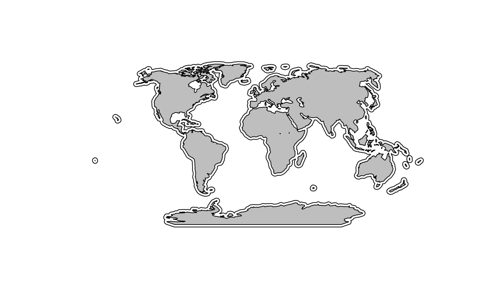
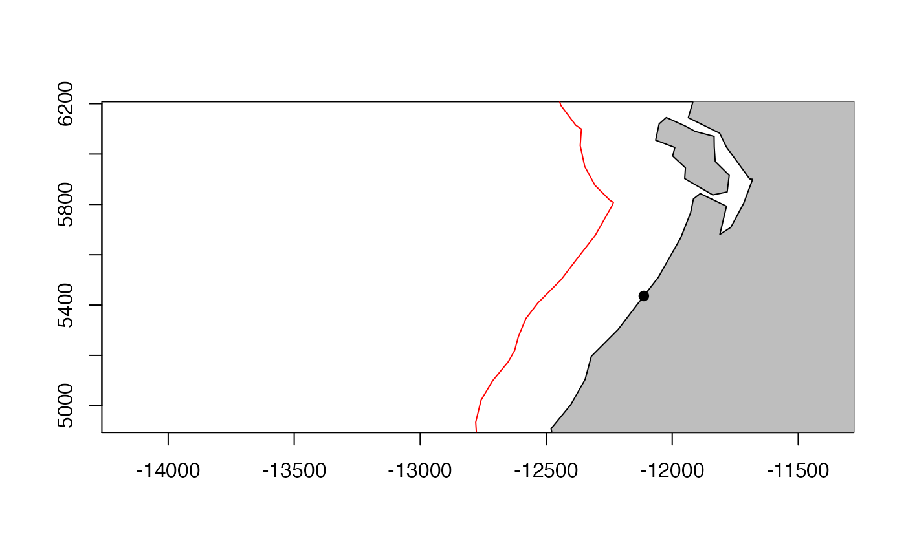
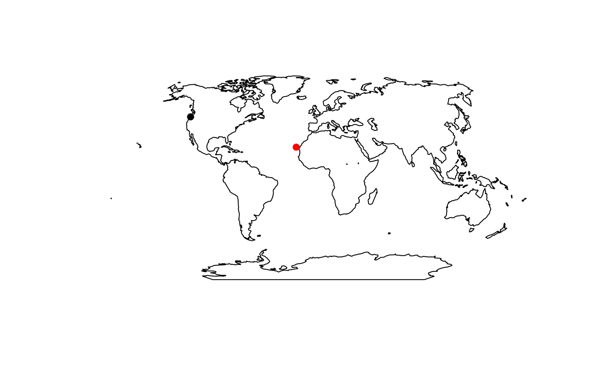
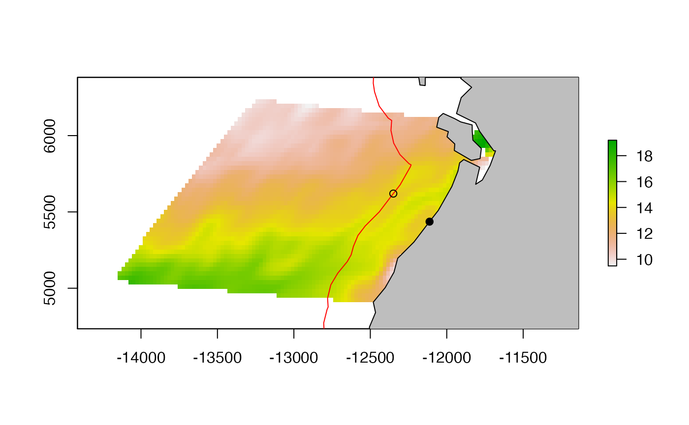

This example shows how to select the nearest point that is some distance offshore and then compute some statistics for that point.
Load the sample data.
data("sample_raster", package = "basics")
df <- sample_raster$df
ras <- sample_raster$raster
lons <- sample_raster$lons
lats <- sample_raster$latsLoad the needed packages for plotting.
## Loading required package: raster## Loading required package: sp## Loading required package: ggplot2
world <- rnaturalearth::ne_countries(scale = "small", returnclass = "sp")
world <- rgeos::gUnaryUnion(world)Create some transformed versions of objects we use a bit.
newcrs <- "+proj=wintri +lon_0=0 +lat_1=0 +x_0=0 +y_0=0 +datum=WGS84 +units=km +no_defs"
mworld <- sp::spTransform(world, newcrs)
mras <- raster::projectRaster(ras, crs = newcrs, over = TRUE)
mpts <- sp::SpatialPoints(cbind(lons, lats), proj4string = sp::CRS("+proj=longlat"))
mpts <- sp::spTransform(mpts, newcrs)We want just the outer part of this polygon. We will use the remove.holes() function from spatialEco.
e300 <- spatialEco::remove.holes(spatialEco::remove.holes(e))## Warning in sp::proj4string(x): CRS object has comment, which is lost in output
## Warning in sp::proj4string(x): CRS object has comment, which is lost in output
plot(e300)We can add the world to this and see that it is just the coastline area. We have lost some interior coastlines like Gulf of Mexico.

el <- as(mworld, "SpatialLines")
el <- raster::crop(el, mpts@bbox)
set.seed(123)
pts <- sp::spsample(el, n = 1, type = "regular")We want to find the point on the coastline that is closest to this 300m offshore line.
plot(e300, border = "red", axes = TRUE, xlim = mpts@bbox[1, ], ylim = mpts@bbox[2, ])
plot(mworld, add = TRUE, col = "grey")
plot(pts, add = TRUE, pch = 19)
The snapPointsToLines() function in maptools should work, but does not seem to handle the types of SpatialLines objects that are returned when we convert our 300 km polygon into lines.
el300 <- as(e300, "SpatialLines")
close_pt <- maptools::snapPointsToLines(pts, el300, maxDist = 500)## Warning in proj4string(points): CRS object has comment, which is lost in output
So we need to use a more brute force method.
maptools::nearestPointOnLine()
el300 <- as(e300, "SpatialLines")
df <- c()
n <- length(el300@lines[[1]]@Lines)
for (i in 1:n) {
df <- rbind(df, cbind(el300@lines[[1]]@Lines[[i]]@coords, ID = i))
}
close_pt <- maptools::nearestPointOnLine(df, pts@coords)
close_pt <- sp::SpatialPoints(matrix(close_pt, ncol = 2), proj4string = CRS(newcrs))We want to compute some statistics associated with the offshore point.
plot(mras, axes = TRUE, xlim = bbox(mras)[1, ], ylim = bbox(mras)[2, ])
plot(e300, border = "red", add = TRUE)
plot(mworld, add = TRUE, col = "grey")
plot(pts, add = TRUE, pch = 19)
plot(close_pt, add = TRUE, pch = 1)
Get the SST at that point.
raster::extract(mras, close_pt)## [1] 13.71775Get the mean SST in a 100km circle around that point. For this we need to make a circle polygon around the point.
circle_pt <- raster::buffer(close_pt, width = 100) We use raster::extract() again.
vals <- raster::extract(mras, circle_pt)[[1]]
vals## [1] 13.31945 13.46494 13.68738 13.95551 13.29376 13.42182 13.51697 13.69093
## [9] 13.88578 14.03232 14.04798 13.97017 13.44384 13.53784 13.64747 13.78938
## [17] 13.87686 13.87308 13.81171 13.74571 13.60285 13.67075 13.73153 13.75507
## [25] 13.71775 13.66057 13.65321 13.73804 13.79995 13.80719 13.75507 13.66105
## [33] 13.58138 13.59631 13.76264 14.04852 13.86184 13.71599 13.59466 13.58590
## [41] 13.78661 14.12991 13.65303 13.62705 13.83026 14.14796and we take the mean.
mean(vals, na.rm = TRUE)## [1] 13.728
crs.wintri <- newcrs
save(crs.wintri, file = file.path(here::here(), "data/crs_wintri.rda"))
world.wintri <- mworld
save(world.wintri, file = file.path(here::here(), "data/world_wintri.rda"))
save(world, file = file.path(here::here(), "data/world.rda"))
buffer300.wintri <- list(line = el300, polygon = e300, df = df, crs = newcrs)
save(buffer300.wintri, file = file.path(here::here(), "data/buffer300_wintri.rda"))
# Make a buffer and return in various formats
make_buffer <- function(d = 300, units = "km", crs.to.use = "wintri", remove.holes = TRUE) {
world <- rnaturalearth::ne_countries(scale = "small", returnclass = "sp")
world <- rgeos::gUnaryUnion(world)
newcrs <- paste0("+proj=", crs.to.use, " +lon_0=0 +lat_1=0 +x_0=0 +y_0=0 +datum=WGS84 +units=", units, " +no_defs")
mworld <- sp::spTransform(world, newcrs)
buff1 <- rgeos::gBuffer(mworld, width = d, byid = TRUE)
e <- raster::erase(buff1, mworld)
if (remove.holes) e <- spatialEco::remove.holes(spatialEco::remove.holes(e))
el <- as(mworld, "SpatialLines")
df <- c()
n <- length(el@lines[[1]]@Lines)
for (i in 1:n) {
df <- rbind(df, cbind(el@lines[[1]]@Lines[[i]]@coords, ID = i))
}
return(list(polygon = e, line = el, df = df, crs = newcrs))
}
# Find the nearest point to the buffer
get.nearest.buffer.pt <- function(pts, buff = buffer300.wintri$df, newcrs = buffer300.wintri$crs) {
if (inherits(pts, "SpatialPoints")) pts <- pts@coords
if (inherits(buff, "SpatialPolygon")) {
buff <- as(mworld, "SpatialLines")
}
if (inherits(buff, "SpatialLines")) {
df <- c()
n <- length(el@lines[[1]]@Lines)
for (i in 1:n) df <- rbind(df, cbind(el@lines[[1]]@Lines[[i]]@coords, ID = i))
buff <- df
}
close_pt <- maptools::nearestPointOnLine(df, pts)
close_pt <- sp::SpatialPoints(matrix(close_pt, ncol = 2), proj4string = CRS(newcrs))
return(close_pt)
}
# Get the mean raster values around a point
get.mean.around.pt <- function(pts, ras, d = 100, units = "km", newcrs = crs.wintri, fun = "mean") {
if (!inherits(pts, "SpatialPoints")) stop("pts shoudl be a SpatialPoints object")
if (!inherits(ras, "raster")) stop("ras should be a raster")
mpts <- pts
if (!identical(crs(pts), newcrs)) mpts <- sp::spTransform(mpts, newcrs)
mras <- ras
if (!identical(crs(ras), newcrs)) mras <- raster::projectRaster(ras, crs = newcrs, over = TRUE)
circle_pt <- raster::buffer(pts, width = d)
vals <- raster::extract(mras, circle_pt)
val <- c()
for (i in 1:length(vals)) val <- c(val, do.call(fun, vals[[i]], na.rm = TRUE))
return(val)
}
# Get the mean raster values around a point
get.mean.at.pt <- function(pts, ras, d = 100, units = "km", newcrs = crs.wintri, fun = "mean") {
if (!inherits(pts, "SpatialPoints")) stop("pts shoudl be a SpatialPoints object")
if (!inherits(ras, "raster")) stop("ras should be a raster")
mpts <- pts
if (!identical(crs(pts), newcrs)) mpts <- sp::spTransform(mpts, newcrs)
mras <- ras
if (!identical(crs(ras), newcrs)) mras <- raster::projectRaster(ras, crs = newcrs, over = TRUE)
val <- raster::extract(mras, pts)
return(val)
}